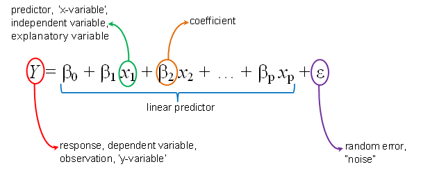
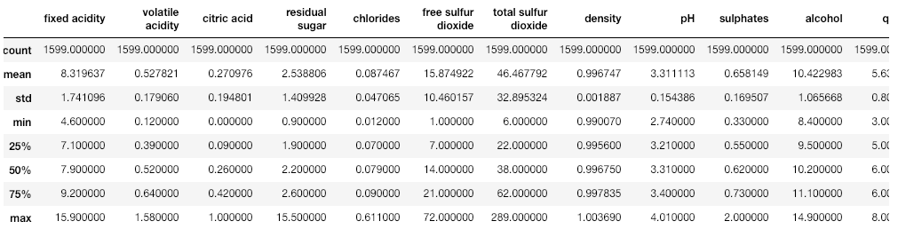
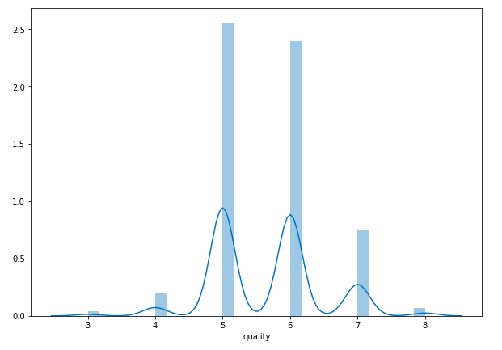
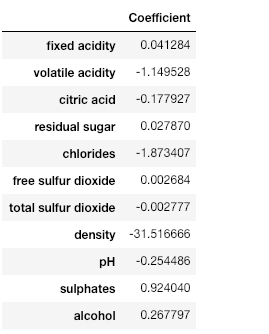
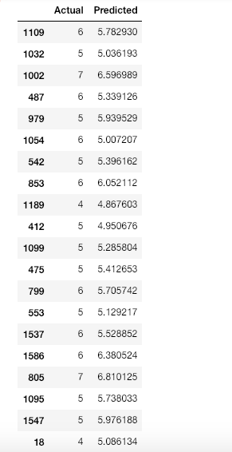
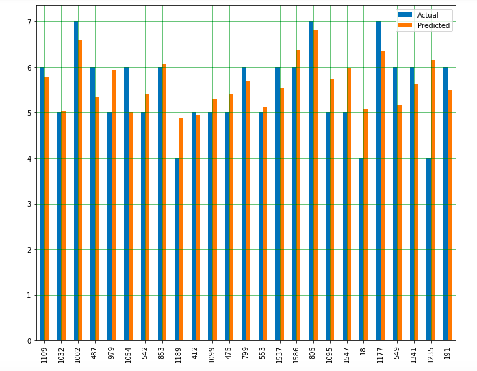

We just performed linear regression in the above section involving two variables. Almost all the real-world problems that you are going to encounter will have more than two variables. Linear regression involving multiple variables is called “multiple linear regression” or multivariate linear regression. The steps to perform multiple linear regression are almost similar to that of simple linear regression. The difference lies in the evaluation. You can use it to find out which factor has the highest impact on the predicted output and how different variables relate to each other.
In this section, I have downloaded red wine quality dataset. The dataset related to red variants of the Portuguese “Vinho Verde” wine. Due to privacy and logistic issues, only physicochemical (inputs) and sensory (the output) variables are available (e.g. there is no data about grape types, wine brand, wine selling price, etc.).
You can download the dataset from here.
We will take into account various input features like fixed acidity, volatile acidity, citric acid, residual sugar, chlorides, free sulfur dioxide, total sulfur dioxide, density, pH, sulphates, alcohol. Based on these features we will predict the quality of the wine.
Now, let's start our coding :
import all the required libraries :
import pandas as pd
import numpy as np
import matplotlib.pyplot as plt
import seaborn as seabornInstance
from sklearn.model_selection import train_test_split
from sklearn.linear_model import LinearRegression
from sklearn import metrics
%matplotlib inline
#The following command imports the dataset from the file you downloaded via the link above:
dataset = pd.read_csv('/Users/nageshsinghchauhan/Documents/projects/ML/ML_BLOG_LInearRegression/winequality.csv')
#Let’s explore the data a little bit by checking the number of rows and columns in it.
dataset.shape
#It will give (1599, 12) as output which means our dataset has 1599 rows and 12 columns.
#To see the statistical details of the dataset, we can use describe():
dataset.describe()

Let us clean our data little bit, So first check which are the columns the contains NaN values in it :
dataset.isnull().any()
Once the above code is executed, all the columns should give False, In case for any column you find True result, then remove all the null values from that column using below code.
dataset = dataset.fillna(method='ffill')
Our next step is to divide the data into “attributes” and “labels”. X variable contains all the attributes/features and y variable contains labels.
X = dataset[['fixed acidity', 'volatile acidity', 'citric acid', 'residual sugar', 'chlorides', 'free sulfur dioxide', 'total sulfur dioxide', 'density', 'pH', 'sulphates','alcohol']].values
y = dataset['quality'].values
Let's check the average value of the “quality” column.
plt.figure(figsize=(15,10))
plt.tight_layout()
seabornInstance.distplot(dataset['quality'])

Average value of the quality of the wine.
As we can observe that most of the time the value is either 5 or 6.
Next, we split 80% of the data to the training set while 20% of the data to test set using below code.
X_train, X_test, y_train, y_test = train_test_split(X, y, test_size=0.2, random_state=0)
Now lets train our model.
regressor = LinearRegression()
regressor.fit(X_train, y_train)
As said earlier, in the case of multivariable linear regression, the regression model has to find the most optimal coefficients for all the attributes. To see what coefficients our regression model has chosen, execute the following script:
coeff_df = pd.DataFrame(regressor.coef_, X.columns, columns=['Coefficient'])
coeff_df
it should give output something like :

This means that for a unit increase in “density”, there is a decrease of 31.51 units in the quality of the wine. Similarly, a unit decrease in “Chlorides“ results in an increase of 1.87 units in the quality of the wine. We can see that the rest of the features have very little effect on the quality of the wine.
Now let's do prediction on test data.
y_pred = regressor.predict(X_test)
Check the difference between the actual value and predicted value.
df = pd.DataFrame({'Actual': y_test, 'Predicted': y_pred})
df1 = df.head(25)

Comparison between Actual and Predicted value
Now let's plot the comparison of Actual and Predicted values
df1.plot(kind='bar',figsize=(10,8))
plt.grid(which='major', linestyle='-', linewidth='0.5', color='green')
plt.grid(which='minor', linestyle=':', linewidth='0.5', color='black')
plt.show()

Bar graph showing the difference between Actual and predicted value
As we can observe here that our model has returned pretty good prediction results.
The final step is to evaluate the performance of the algorithm. We’ll do this by finding the values for MAE, MSE, and RMSE. Execute the following script:
print('Mean Absolute Error:', metrics.mean_absolute_error(y_test, y_pred))
print('Mean Squared Error:', metrics.mean_squared_error(y_test, y_pred))
print('Root Mean Squared Error:', np.sqrt(metrics.mean_squared_error(y_test, y_pred)))
The output looks like :
('Mean Absolute Error:', 0.46963309286611077)
('Mean Squared Error:', 0.38447119782012446)
('Root Mean Squared Error:', 0.6200574149384268)
You can see that the value of root mean squared error is 0.62, which is slightly greater than 10% of the mean value which is 5.63. This means that our algorithm was not very accurate but can still make reasonably good predictions.
There are many factors that may have contributed to this inaccuracy, for example :
Need more data: We need to have a huge amount of data to get the best possible prediction.
Bad assumptions: We made the assumption that this data has a linear relationship, but that might not be the case. Visualizing the data may help you determine that.
Poor features: The features we used may not have had a high enough correlation to the values we were trying to predict.